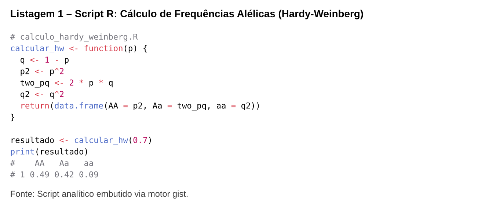
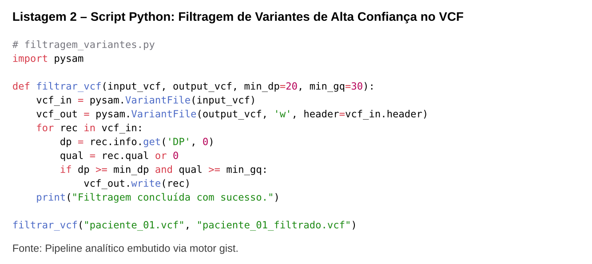

SCRIPTS ANALÍTICOS REMOTOS // FUXICO
Motor gist — Inclusão de Scripts do Fuxico
O motor gist permite embutir scripts de análise de dados (R, Python, Julia, SQL, Bash) hospedados na plataforma Fuxico (https://gist.github.com/{id}) diretamente no texto acadêmico, com realce de sintaxe nativo no Typst e cache em memória para re-compilações instantâneas.
⚙️ Diretivas de Configuração (%%)
| Diretiva | Obrigatória | Tipo | Descrição |
|---|---|---|---|
url |
Sim | String | URL pública do gist no Fuxico (ex.: https://gist.github.com/exemplo/abc123). |
file |
Não | String | Nome do arquivo específico para gists com múltiplos arquivos. Se omitido, captura o primeiro arquivo. |
title / titulo |
Não | String | Legenda editorial numerada associada ao código no Typst. |
🛡️ Cache em Memória e Resiliência
- Cache Local: As chamadas para os gists são cacheadas em memória pelo servidor Joaju, garantindo que o compilador não realize downloads redundantes a cada compilação de nota.
- Resiliência de Rede: Se a conexão falhar ou o link retornar erro 404, o compilador insere um card de aviso tipográfico com o link de acesso direto, prevenindo qualquer quebra no pipeline de compilação da publicação.
🧪 Exemplos Práticos
1. Script R com Legenda Editorial
Markdown (gist R)
Resultado da Renderização

```gist
%% url=https://gist.github.com/exemplo/calculo_hw
%% file=calculo_frequencias.R
%% title="Script R: Cálculo de Frequências Alélicas de Hardy-Weinberg"
```2. Pipeline de Bioinformática em Python
Markdown (gist Python)
Resultado da Renderização

```gist
%% url=https://gist.github.com/exemplo/pipeline_vcf
%% file=filtragem_variantes.py
%% title="Script Python: Filtragem de Variantes de Alta Confiança no VCF"
```